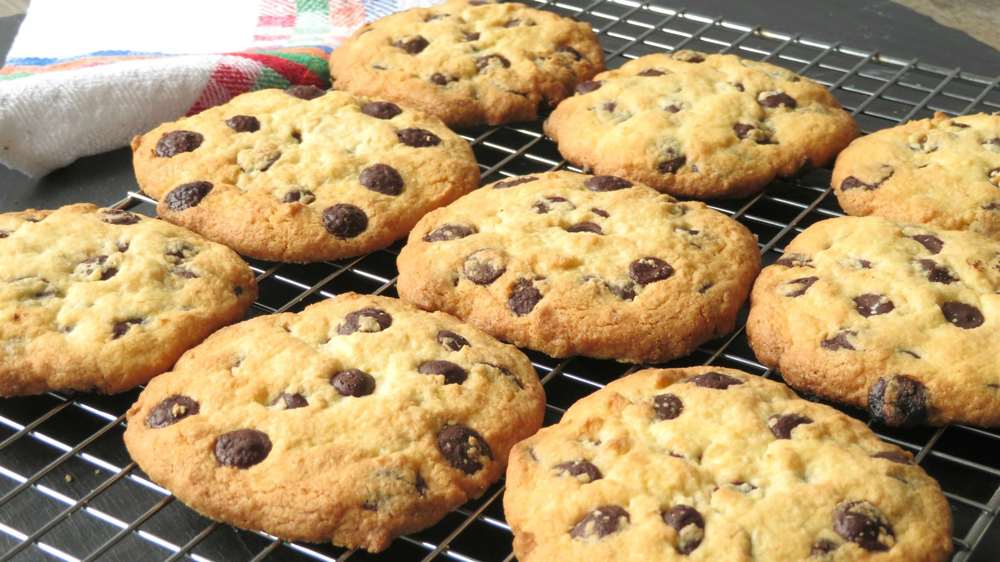

Receta para 15 Cookies
|
 |
Elaboración
- En un bol grande, coloca la harina, el azúcar, los dos huevos, la levadura y la esencia de vainilla.
- En paralelo, pon 3 cucharadas de mantequilla en un recipiente y caliéntalo durante unos segundos en el microondas hasta que se derrita.
- Agrega la mantequilla al resto de ingredientes y mezcla todo bien hasta que quede una masa homogénea.
- Déjala en la nevera entre 15 y 30 minutos hasta que se enfríe.
- Saca la masa y empieza a hacer bolas pequeñas y colócalas sobre la bandeja dejando espacio entre ellas. Cuando las tengas, échale un poco de pepitas por encima a tu gusto.
- Precalienta el horno a unos 180 grados y, una vez caliente, introduce la bandeja y déjala durante un cuarto de hora hasta que veas que tengan ese color dorado.
- Deja que pierdan algo de temperatura y sírvelas.